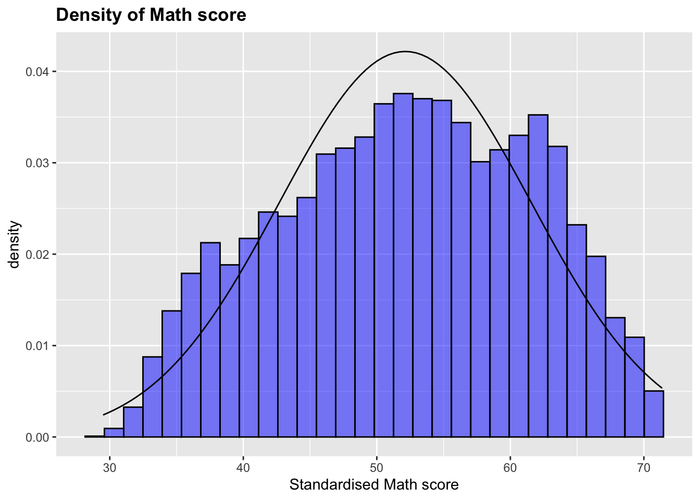
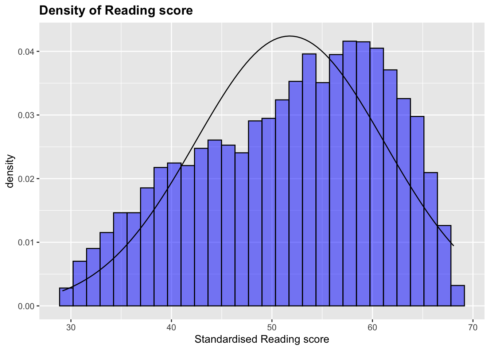
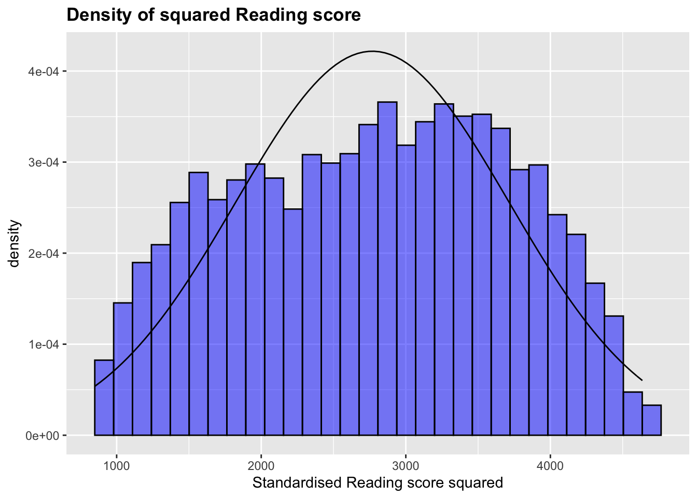
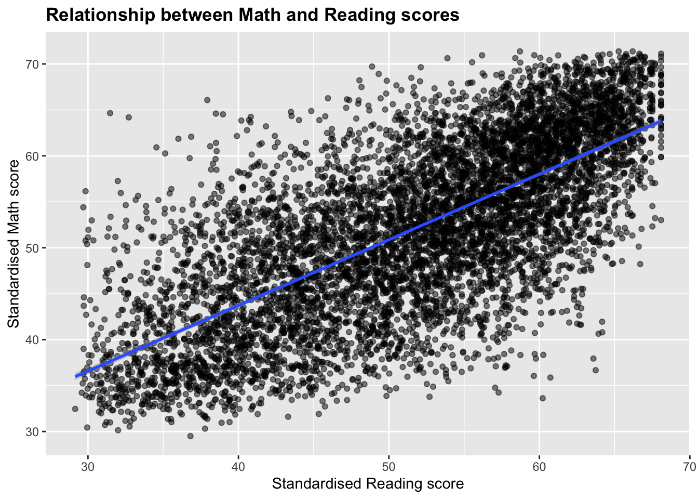
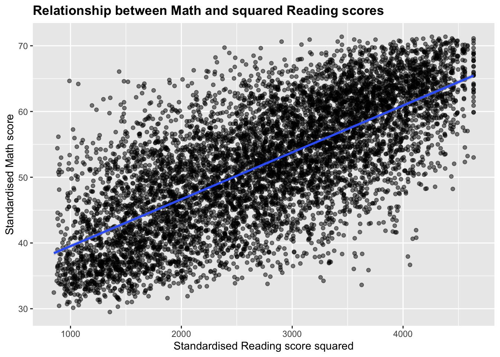

This short regression analysis invloves simple hypothesis testing, a two stage least squares regression and model comparison. I will make inferences about the standardised math scores of students.
# import libraries
#
library(foreign) # to import dta file
library(dplyr) # for pipes
library(ggplot2) # for plots
library(car) # for F-test
library(AER) # for IV
library(stargazer)#load data
#
skl <- read.dta("schooling.dta")%>%as_tibble()
glimpse(skl)## Rows: 7,430
## Columns: 13
## $ id <dbl> 124902, 124915, 124916, 124932, 124944, 124947, 124966, 1249…
## $ read12 <dbl> 61.41, 58.34, 59.33, 49.59, 57.62, 52.53, 60.12, 64.69, 42.0…
## $ math12 <dbl> 49.77, 59.84, 50.38, 45.03, 54.26, 56.73, 55.37, 65.07, 53.9…
## $ female <int> 0, 0, 1, 1, 1, 1, 1, 0, 0, 0, 0, 1, 1, 1, 1, 1, 0, 0, 0, 0, …
## $ asian <int> 0, 0, 0, 0, 0, 0, 0, 0, 0, 0, 0, 0, 0, 0, 0, 0, 0, 0, 0, 0, …
## $ hispan <int> 0, 0, 0, 0, 0, 0, 0, 0, 0, 0, 0, 0, 0, 0, 0, 0, 0, 0, 0, 0, …
## $ black <int> 0, 0, 0, 0, 0, 0, 0, 0, 0, 0, 0, 0, 0, 0, 0, 0, 0, 0, 0, 0, …
## $ motheduc <dbl> 14, 14, 14, 12, 12, 12, 14, 14, 14, 14, 12, 12, 14, 14, 12, …
## $ fatheduc <dbl> 12.0, 14.0, 11.0, 14.0, 12.0, 11.0, 14.0, 14.0, 14.0, 12.0, …
## $ lfaminc <dbl> 10.308952, 10.308952, 10.308952, 10.308952, 10.657259, 11.04…
## $ hsgrad <int> 1, 1, 1, 1, 1, 1, 1, 1, 1, 1, 1, 1, 1, 1, 1, 1, 1, 1, 1, 1, …
## $ cathhs <int> 0, 0, 0, 0, 0, 0, 0, 0, 0, 0, 0, 0, 0, 0, 0, 0, 1, 1, 1, 1, …
## $ parcath <int> 1, 1, 1, 1, 1, 1, 1, 1, 1, 1, 1, 1, 1, 1, 1, 1, 1, 0, 0, 1, …summary(skl)## id read12 math12 female
## Min. : 124902 Min. :29.15 Min. :29.50 Min. :0.0000
## 1st Qu.:2424049 1st Qu.:44.52 1st Qu.:45.02 1st Qu.:0.0000
## Median :4592442 Median :53.08 Median :52.53 Median :1.0000
## Mean :4589838 Mean :51.77 Mean :52.13 Mean :0.5174
## 3rd Qu.:7241106 3rd Qu.:59.47 3rd Qu.:59.86 3rd Qu.:1.0000
## Max. :7979086 Max. :68.09 Max. :71.37 Max. :1.0000
##
## asian hispan black motheduc
## Min. :0.00000 Min. :0.0000 Min. :0.00000 Min. : 8.00
## 1st Qu.:0.00000 1st Qu.:0.0000 1st Qu.:0.00000 1st Qu.:12.00
## Median :0.00000 Median :0.0000 Median :0.00000 Median :14.00
## Mean :0.05168 Mean :0.1035 Mean :0.07066 Mean :13.36
## 3rd Qu.:0.00000 3rd Qu.:0.0000 3rd Qu.:0.00000 3rd Qu.:14.00
## Max. :1.00000 Max. :1.0000 Max. :1.00000 Max. :18.00
##
## fatheduc lfaminc hsgrad cathhs
## Min. : 8.00 Min. : 6.215 Min. :0.0000 Min. :0.00000
## 1st Qu.:12.00 1st Qu.:10.021 1st Qu.:1.0000 1st Qu.:0.00000
## Median :14.00 Median :10.309 Median :1.0000 Median :0.00000
## Mean :13.67 Mean :10.353 Mean :0.9303 Mean :0.06083
## 3rd Qu.:16.00 3rd Qu.:10.657 3rd Qu.:1.0000 3rd Qu.:0.00000
## Max. :18.00 Max. :12.346 Max. :1.0000 Max. :1.00000
## NA's :1460
## parcath
## Min. :0.0000
## 1st Qu.:0.0000
## Median :0.0000
## Mean :0.3459
## 3rd Qu.:1.0000
## Max. :1.0000
## #
# read12 - reading standardised score
# math12 - math standardised score
# female - =1 if femlae
# asian - =1 if asian
# hispanic - =1 if hispanic
# black - =1 if black
# motheduc - mothers years of education
# fatheduc - fathers years of education
# lfaminc - log of family income
# hsgrad - =1 if graduated highschool by 1994
# catths - =1 if attended catholic highschool
# parcath - =1 if a parent reports being catholicDataset has 13 variables and 7430 observations. There are 4 continuous variables and the rest are binary (with the exception of ID). About 20% of high school graduation dummy has missing values.
The regressand is math12 which is the standardised math scores for students. We will first take a look at its ditribution, I would expect this to be more or less normal.
#
m <- mean(skl$math12)
std <- sd(skl$math12)
skl%>%ggplot() +
geom_histogram(aes(x=math12, y=..density..), fill="blue", colour="black", alpha=0.5) +
stat_function(fun=dnorm, args=list(mean=m, sd=std), aes(x=math12)) +
labs(x="Standardised Math score", title="Density of Math score") +
theme(plot.title=element_text(face="bold"))
I will also look at how the distributions of the dependent variable differ between genders.
#
fem <- skl%>%filter(female==1)%>%summarise(mean=mean(math12), std=sd(math12))
male <- skl%>%filter(female==0)%>%summarise(mean=mean(math12), std=sd(math12))
fm <- fem[1]%>%pull()
fstd <- fem[2]%>%pull()
mm <- male[1]%>%pull()
mstd <- male[2]%>%pull()
skl%>%ggplot() +
geom_histogram(aes(x=math12, y=..density..), fill="blue", colour="black", alpha=0.5) +
stat_function(fun=dnorm, args=list(mean=fm, sd=fstd), aes(x=math12, colour="female")) +
stat_function(fun=dnorm, args=list(mean=mm, sd=mstd), aes(x=math12, colour="male")) +
labs(x="Standardised Math score", title="Density of Math score") +
scale_colour_manual("Gender", values=c("red", "green")) +
theme(plot.title=element_text(face="bold"), legend.position=c(.9,.9))This shows that males have a slightly higher average math score but we will test to see if these means are significantly different from eachother statistically.
# H0:fm==mm
# H1:fm!=mm
#
diff <- fm-mm
v <- var(skl$math12)
n <- nrow(skl)
se <- sqrt(v/n)
df <- n-2
alpha <- 0.05
t <- diff/se
tcr <- qt(1-alpha/2, df)
abs(t)>tcr #True## [1] TRUE#
# evidence found to reject null at 5% sig levelThis simple two means t-test shows that there is evidence to reject the null hypothesis that the means of the two groups are the same at the 5% significance level.
We can go on to look at the distribution of regressors such as the standardised reading score.
#
m <- mean(skl$read12)
std <- sd(skl$read12)
skl%>%ggplot() +
geom_histogram(aes(x=read12, y=..density..), fill="blue", colour="black", alpha=0.5) +
stat_function(fun=dnorm, args=list(mean=m, sd=std), aes(x=read12)) +
labs(x="Standardised Reading score", title="Density of Reading score") +
theme(plot.title=element_text(face="bold"))
There is a slight negative skew in the data so I will square the reading score variable and see how the distribution looks.
#
skl$sqread12 <- skl$read12^2
m <- mean(skl$sqread12)
std <- sd(skl$sqread12)
skl%>%ggplot() +
geom_histogram(aes(x=sqread12, y=..density..), fill="blue", colour="black", alpha=0.5) +
stat_function(fun=dnorm, args=list(mean=m, sd=std), aes(x=sqread12)) +
labs(x="Standardised Reading score squared", title="Density of squared Reading score") +
theme(plot.title=element_text(face="bold"))
This distribution looks slightly more normal. We can compare scatterplots of the regressor before and after transformation against the dependent variable.
#
skl%>%ggplot(aes(x=read12, y=math12)) +
geom_point(alpha=0.5) +
geom_smooth(method = "lm") +
labs(y="Standardised Math score", x="Standardised Reading score",
title="Relationship between Math and Reading scores" ) +
theme(plot.title=element_text(face="bold"))
skl%>%ggplot(aes(x=sqread12, y=math12)) +
geom_point(alpha=0.5) +
geom_smooth(method = "lm") +
labs(y="Standardised Math score", x="Standardised Reading score squared",
title="Relationship between Math and squared Reading scores" ) +
theme(plot.title=element_text(face="bold"))
The transformation looks to have made the data more linear so I will include in regression.
I will run a basic multiple regression to look at the significance of regressors.
mod1 <- lm(math12~read12+sqread12+female+asian+hispan+black+motheduc+fatheduc+lfaminc+cathhs,
data = skl)
smod1 <- summary(mod1)
# math12_hat = b0 + b1read12 + b2sqread12 + b3female + b4asian + b5hispan + b6black +
# b7motheduc + b8fatheduc + b9lfaminc + b10cathhs
#
smod1##
## Call:
## lm(formula = math12 ~ read12 + sqread12 + female + asian + hispan +
## black + motheduc + fatheduc + lfaminc + cathhs, data = skl)
##
## Residuals:
## Min 1Q Median 3Q Max
## -26.7598 -4.2701 0.2842 4.3614 23.8141
##
## Coefficients:
## Estimate Std. Error t value Pr(>|t|)
## (Intercept) 13.6463782 2.2349985 6.106 1.07e-09 ***
## read12 0.2161076 0.0813921 2.655 0.00794 **
## sqread12 0.0043159 0.0008113 5.320 1.07e-07 ***
## female -2.4098751 0.1463840 -16.463 < 2e-16 ***
## asian 2.2597579 0.3308959 6.829 9.21e-12 ***
## hispan -0.4345675 0.2480476 -1.752 0.07982 .
## black -2.1120941 0.2944068 -7.174 7.98e-13 ***
## motheduc 0.3338614 0.0460291 7.253 4.48e-13 ***
## fatheduc 0.3384282 0.0418467 8.087 7.07e-16 ***
## lfaminc 0.7286871 0.1069738 6.812 1.04e-11 ***
## cathhs 0.6822298 0.3060018 2.229 0.02581 *
## ---
## Signif. codes: 0 '***' 0.001 '**' 0.01 '*' 0.05 '.' 0.1 ' ' 1
##
## Residual standard error: 6.242 on 7419 degrees of freedom
## Multiple R-squared: 0.5651, Adjusted R-squared: 0.5645
## F-statistic: 964.1 on 10 and 7419 DF, p-value: < 2.2e-16Test to see whether hispan and cathhs are jointly insignificant with F-test then t-test hispan.
# F-test
# H0:b5=b10=0
# H1:b5!=0 or b10!=0
urstrctd <- mod1
nullhyp <- c("hispan", "cathhs")
linearHypothesis(urstrctd, nullhyp)## Linear hypothesis test
##
## Hypothesis:
## hispan = 0
## cathhs = 0
##
## Model 1: restricted model
## Model 2: math12 ~ read12 + sqread12 + female + asian + hispan + black +
## motheduc + fatheduc + lfaminc + cathhs
##
## Res.Df RSS Df Sum of Sq F Pr(>F)
## 1 7421 289374
## 2 7419 289073 2 301.24 3.8657 0.02099 *
## ---
## Signif. codes: 0 '***' 0.001 '**' 0.01 '*' 0.05 '.' 0.1 ' ' 1# can reject the null that our coefficients are jointly 0
# t-test
#H0:b3=0
#H1:b3!=0
b5 <- coef(mod1)[["hispan"]]
seb5 <- sqrt(vcov(mod1)[4,4])
df <- df.residual(mod1)
t <- b5/seb5
tcr <- qt(1-alpha/2, df)
abs(t)>tcr # False ## [1] TRUE# fail to reject the null at the 5% significance level
#The F-test rejects the null hypothesis that our coefficients are jointly equal to 0 and our t-test fails to reject the null that hispan is equal to 0.
Catholic high schools are usually quite prolific and their students score well, often they are hard for students to get in to and for reasons such as these it is likely that the cathhs variable is correlated with the unobserved in our model. I would suggest that a variable indicating whether or not the students parents were catholic would capture a fair amount of the variance in the cathhs variable and I think it would be defendable that this variable would not be correlated with the unobserved.
# IV estimation for catholic high school (cathhs) using parental catholic variable (parcath)
#
stage1 <- lm(cathhs~parcath+read12+sqread12+female+asian+hispan+black+motheduc+fatheduc+lfaminc,
data = skl)
sstage1 <- summary(stage1)
sstage1##
## Call:
## lm(formula = cathhs ~ parcath + read12 + sqread12 + female +
## asian + hispan + black + motheduc + fatheduc + lfaminc, data = skl)
##
## Residuals:
## Min 1Q Median 3Q Max
## -0.26106 -0.10532 -0.02656 0.00605 1.09037
##
## Coefficients:
## Estimate Std. Error t value Pr(>|t|)
## (Intercept) -2.648e-01 8.099e-02 -3.269 0.001084 **
## parcath 1.560e-01 5.886e-03 26.504 < 2e-16 ***
## read12 -2.036e-03 2.952e-03 -0.690 0.490483
## sqread12 3.188e-05 2.943e-05 1.083 0.278676
## female -1.199e-02 5.307e-03 -2.260 0.023878 *
## asian -1.350e-02 1.200e-02 -1.125 0.260656
## hispan -4.232e-02 9.430e-03 -4.488 7.31e-06 ***
## black 6.000e-02 1.075e-02 5.583 2.45e-08 ***
## motheduc 1.936e-03 1.670e-03 1.160 0.246164
## fatheduc 5.244e-03 1.516e-03 3.459 0.000546 ***
## lfaminc 1.915e-02 3.875e-03 4.941 7.95e-07 ***
## ---
## Signif. codes: 0 '***' 0.001 '**' 0.01 '*' 0.05 '.' 0.1 ' ' 1
##
## Residual standard error: 0.2264 on 7419 degrees of freedom
## Multiple R-squared: 0.1045, Adjusted R-squared: 0.1033
## F-statistic: 86.62 on 10 and 7419 DF, p-value: < 2.2e-16# significant estimator for cathhs. Likely uncorrelated with the unobserved so
# evidence for valid instrument.
#I will build the regression using the fitted values of the cathhs variable and this will show explicit results. However, the standard errors in the regression will be calculated wrong so I will use the function ivreg from the AER package to collect the correct results.
#
skl$cathhs_hat <- fitted(stage1)
mod2 <- lm(math12~read12+sqread12+female+asian+hispan+black+motheduc+fatheduc+lfaminc+cathhs_hat,
data = skl)
smod2 <- summary(mod2)
smod2##
## Call:
## lm(formula = math12 ~ read12 + sqread12 + female + asian + hispan +
## black + motheduc + fatheduc + lfaminc + cathhs_hat, data = skl)
##
## Residuals:
## Min 1Q Median 3Q Max
## -26.6447 -4.2762 0.2839 4.3552 23.8194
##
## Coefficients:
## Estimate Std. Error t value Pr(>|t|)
## (Intercept) 14.580152 2.255116 6.465 1.07e-10 ***
## read12 0.216813 0.081351 2.665 0.007712 **
## sqread12 0.004276 0.000811 5.273 1.38e-07 ***
## female -2.366372 0.147015 -16.096 < 2e-16 ***
## asian 2.301589 0.331016 6.953 3.88e-12 ***
## hispan -0.534871 0.250132 -2.138 0.032520 *
## black -2.192015 0.295442 -7.419 1.31e-13 ***
## motheduc 0.331112 0.046015 7.196 6.82e-13 ***
## fatheduc 0.320876 0.042227 7.599 3.35e-14 ***
## lfaminc 0.653835 0.109749 5.958 2.68e-09 ***
## cathhs_hat 3.686572 1.039934 3.545 0.000395 ***
## ---
## Signif. codes: 0 '***' 0.001 '**' 0.01 '*' 0.05 '.' 0.1 ' ' 1
##
## Residual standard error: 6.239 on 7419 degrees of freedom
## Multiple R-squared: 0.5656, Adjusted R-squared: 0.565
## F-statistic: 965.8 on 10 and 7419 DF, p-value: < 2.2e-16# explicit results shown in mod2 however standard errors will be calculated wrong
mod3 <- ivreg(math12~read12+sqread12+female+asian+hispan+black+motheduc+fatheduc+lfaminc+cathhs |
read12+sqread12+female+asian+hispan+black+motheduc+fatheduc+lfaminc+parcath,
data=skl)
smod3 <- summary(mod3)
smod3##
## Call:
## ivreg(formula = math12 ~ read12 + sqread12 + female + asian +
## hispan + black + motheduc + fatheduc + lfaminc + cathhs |
## read12 + sqread12 + female + asian + hispan + black + motheduc +
## fatheduc + lfaminc + parcath, data = skl)
##
## Residuals:
## Min 1Q Median 3Q Max
## -26.5591 -4.2750 0.2603 4.4016 23.9677
##
## Coefficients:
## Estimate Std. Error t value Pr(>|t|)
## (Intercept) 14.5801517 2.2708796 6.420 1.44e-10 ***
## read12 0.2168133 0.0819195 2.647 0.008146 **
## sqread12 0.0042762 0.0008167 5.236 1.68e-07 ***
## female -2.3663716 0.1480430 -15.984 < 2e-16 ***
## asian 2.3015887 0.3333301 6.905 5.44e-12 ***
## hispan -0.5348706 0.2518803 -2.124 0.033744 *
## black -2.1920150 0.2975071 -7.368 1.92e-13 ***
## motheduc 0.3311119 0.0463363 7.146 9.79e-13 ***
## fatheduc 0.3208760 0.0425216 7.546 5.02e-14 ***
## lfaminc 0.6538347 0.1105166 5.916 3.44e-09 ***
## cathhs 3.6865717 1.0472037 3.520 0.000433 ***
## ---
## Signif. codes: 0 '***' 0.001 '**' 0.01 '*' 0.05 '.' 0.1 ' ' 1
##
## Residual standard error: 6.283 on 7419 degrees of freedom
## Multiple R-Squared: 0.5595, Adjusted R-squared: 0.5589
## Wald test: 952.4 on 10 and 7419 DF, p-value: < 2.2e-16We can compare models before and after IV.
stargazer(mod1, mod3, type="text")##
## =======================================================================
## Dependent variable:
## ---------------------------------------
## math12
## OLS instrumental
## variable
## (1) (2)
## -----------------------------------------------------------------------
## read12 0.216*** 0.217***
## (0.081) (0.082)
##
## sqread12 0.004*** 0.004***
## (0.001) (0.001)
##
## female -2.410*** -2.366***
## (0.146) (0.148)
##
## asian 2.260*** 2.302***
## (0.331) (0.333)
##
## hispan -0.435* -0.535**
## (0.248) (0.252)
##
## black -2.112*** -2.192***
## (0.294) (0.298)
##
## motheduc 0.334*** 0.331***
## (0.046) (0.046)
##
## fatheduc 0.338*** 0.321***
## (0.042) (0.043)
##
## lfaminc 0.729*** 0.654***
## (0.107) (0.111)
##
## cathhs 0.682** 3.687***
## (0.306) (1.047)
##
## Constant 13.646*** 14.580***
## (2.235) (2.271)
##
## -----------------------------------------------------------------------
## Observations 7,430 7,430
## R2 0.565 0.559
## Adjusted R2 0.565 0.559
## Residual Std. Error (df = 7419) 6.242 6.283
## F Statistic 964.063*** (df = 10; 7419)
## =======================================================================
## Note: *p<0.1; **p<0.05; ***p<0.01